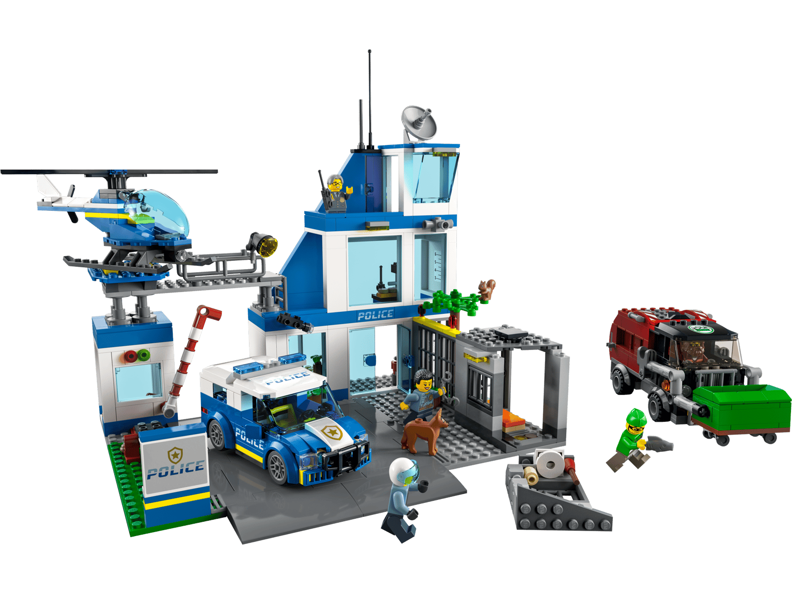

Star Wars
Build iconic ships, famous battles, and favorite characters from the Star Wars galaxy.
Whether you are new to LEGO or a lifelong builder, Brick Explorer helps you discover themes, building tips, and collecting advice.
Explore ThemesLEGO has inspired creativity for generations by allowing people of all ages to build anything they can imagine. From exciting adventures in Star Wars to realistic vehicles, fantasy worlds, and impressive architecture, there is a LEGO theme for everyone.
This website was created to help new builders learn about LEGO while also giving experienced fans useful information about popular themes and collecting.
The LEGO Group was founded in Denmark in 1932. Since then, LEGO has become one of the world's most recognizable toy brands. Millions of builders enjoy creating everything from simple houses to detailed models made from thousands of bricks.
Build iconic ships, famous battles, and favorite characters from the Star Wars galaxy.
Join the ninja heroes in exciting adventures with dragons, temples, and giant mechs.

Explore everyday life with police stations, fire departments, trains, and construction vehicles.
LEGO encourages builders to use imagination while following instructions or creating original designs.
Building helps develop planning, patience, and critical thinking skills.
Many people enjoy displaying their completed sets and collecting favorite themes.
Loading...
Visit our LEGO Themes page to discover which theme is right for you.
View All Themes